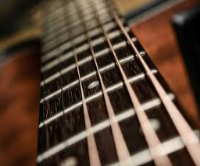

Brass

Strings
Woodwinds

Woodwind instruments are a family of musical instruments within the more general category of wind instruments. There are two main types of woodwind instruments: flutes and reed instruments (otherwise called reed pipes). What differentiates these instruments from other wind instruments is the way in which they produce their sound.[1] Examples are a saxophone, a bassoon and a piccolo.